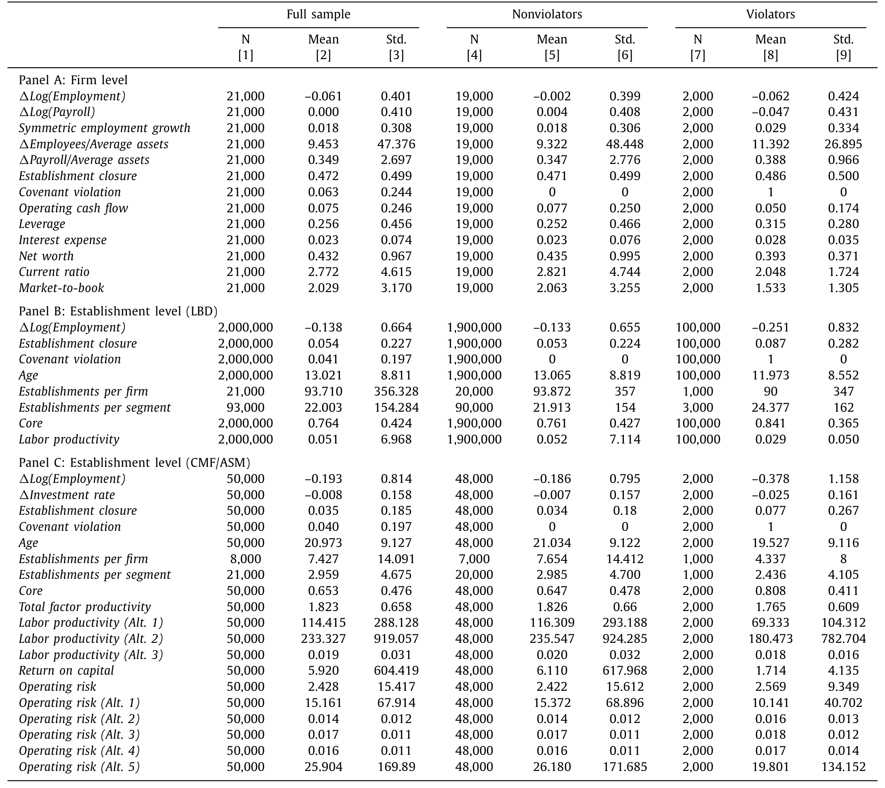
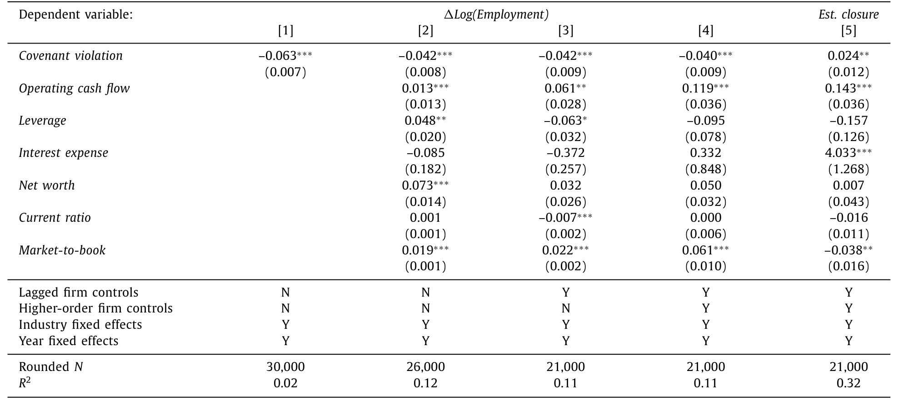
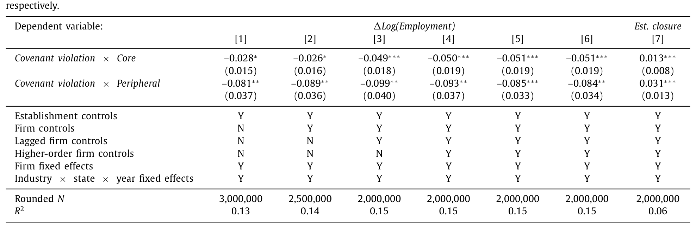
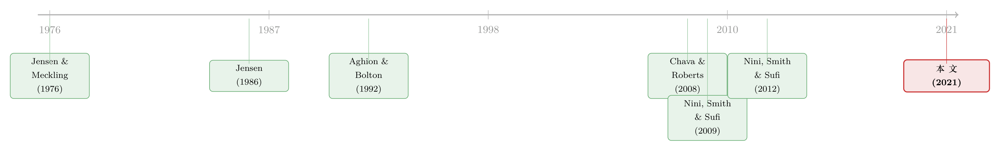

把公司这个「黑箱」拆开：契约一违约，债主把资源搬去了哪里
本文读的是 Ersahin, Irani & Le (2021, JFE)：当一家公司触发 债务契约违约 (debt covenant violation)、控制权悄悄移交给债权人之后，公司并不是「一刀切」地全面收缩——它把就业、投资从边缘业务、低效率、高风险的那些工厂里精准抽走，关停得更频繁；而这种「外科手术式」的腾挪，只在管理层代理成本高、且主力银行懂这个行业时才会发生。一句话：债权人治理的价值，藏在公司内部资源被重新搬动的微观轨迹里。
1 一个被当作「黑箱」的问题
先讲一个让人略感意外的事实。
过去二十年，公司金融里有一条越来越清晰的证据链：当一家公司违反了债务契约（哪怕只是「技术性违约」，公司根本没有错过任何一笔还款），控制权就会按合同条款部分移交给债权人。拿到这把「随时可以叫停贷款」的钥匙之后，债主会逼着公司变得保守——少借钱、多留现金（Roberts and Sufi, 2009）、砍投资、砍并购、甚至裁员（Chava and Roberts, 2008）。更让人吃惊的是，Nini, Smith and Sufi (2012) 发现，违约之后公司的经营业绩反而改善了，风险调整后的股票收益在违约后三个月内以每年约 5% 的速度反弹——债权人一插手，股东居然跟着沾光。
这就有意思了。债权人的偿付结构是「凹」的（concave）：公司做得再好，他们也只能拿回本息；做砸了，亏的却是他们。按直觉，这样的人插手公司，应该只会逼着公司「别冒险」，怎么会替股东把价值做大？
这正是这篇论文要回答的张力：如果债权人控制权真能创造价值，那价值到底是从哪一道工序里冒出来的？
而问题的尴尬之处在于：此前所有的证据都停在公司层面。我们看到违约公司整体裁了员、砍了投资、业绩变好了——但公司内部到底发生了什么，我们一无所知。公司被当成了一个「黑箱」(black box)：钱进去、人出来，中间那条传送带怎么运转，没人看得见。
Ersahin, Irani and Le 这篇文章，做的就是一件事——把这个黑箱撬开。
2 一把撬开黑箱的钥匙：普查局的工厂级数据
要看清黑箱里的传送带，你需要的不是更聪明的模型，而是更细的数据。
作者用的是美国普查局（US Census Bureau）的 工厂/网点级 (establishment-level) 机密数据。这是关键。一家上市公司在 Compustat 里只是一行财务报表，但在普查局眼里，它是分散在全国的几十、上百个具体「网点」——每一家工厂、每一个门店都有自己的就业人数、工资单、产出、资本开支。三套数据拼在一起：
- 纵向商业数据库 (Longitudinal Business Database, LBD)：覆盖全美所有有薪雇员的网点，给出就业、工资、地点、行业，还能识别网点关停；
- 制造业普查与年度调查 (CMF/ASM)：对制造业网点（SIC 3000–3999）给出产出、资本、原材料投入的细节，让作者能逐个网点估算生产率；
- 契约违约数据：直接用了 Nini et al. (2012) 公开的、基于 SEC 文本分析手工整理的季度违约指标，覆盖约 90% 的实际披露违约。
把 Compustat 通过普查局的 SSEL 桥接表逐家匹配到它的网点之后，最终样本是约 21,000 个公司-年、覆盖约 2,000,000 个网点-年，时间跨度 1996–2009。新发生的契约违约出现在 6.3% 的公司-年里。

Table 1
如表 1 所示，违约公司在违约前后就「面相」就不一样：净值更低、流动比率更差、市净率更低、现金更少、杠杆更高——它们本来就是一批挣扎中的公司。所以识别的全部难点，就在于怎么把「违约的因果效应」从「违约公司本来就在走下坡路」里干净地剥出来。
3 识别策略：违约是「断点」，不是「随机」
这里要诚实：违约不是天上掉下来的随机事件。一家公司之所以违约，往往是因为它经营恶化。直接比较违约公司和非违约公司，你测到的可能只是「差公司本来就该裁员」。
作者沿用了 Chava and Roberts (2008) 以来这条文献的标准做法——把它当成一个准双重差分 (difference-in-differences, DiD) 设计来估计。核心的估计方程大致是这样：
$$ y_{i,t} = \alpha + \beta \cdot \text{Violation}_{i,t} + \Gamma' X_{i,t-1} + \mu_i + \delta_t + \varepsilon_{i,t} $$
其中 \(y_{i,t}\) 是公司（或网点）层面的就业增长、投资、关停概率；\(\text{Violation}_{i,t}\) 是当年是否违约的指示变量；\(X_{i,t-1}\) 是一组控制变量；\(\mu_i\) 和 \(\delta_t\) 分别是公司（网点）和年份的固定效应。
这套设计里，几个环节是要害：
第一，控制契约赖以书写的那些会计比率本身。 违约由净值、流动比率等会计指标触发，所以作者在回归里直接放进经营现金流、杠杆、利息费用/平均资产、净值/总资产、流动比率、市净率。这相当于把「为什么会违约」的那部分变异先吸掉，剩下的才更接近「违约本身带来了什么」。
第二，固定效应吸收掉永久性差异和共同时间冲击。 公司固定效应让识别来自「同一家公司违约前后的对比」；年份固定效应吸掉宏观周期。
第三，作者额外做了一组基于断点的检验。 既然违约由一个明确的会计阈值触发，那么「刚好越过阈值」和「差一点没越过」的公司，在阈值附近应当是高度可比的——这给 DiD 提供了一个 模糊断点回归 (regression discontinuity) 式的稳健性背书（论文末尾的表里有 McCrary 密度检验等）。
当然，这套识别不是无懈可击的。它的可信度建立在「控制了会计比率与公司固定效应之后，违约的时点近似外生于网点层面的资源配置选择」这个假设上。如果一家公司预见到自己要违约，提前就开始动手关厂裁人，那 DiD 会把这部分提前反应也算进效应里。后面我们会回到这个担忧。
4 反转：公司不是「全面收缩」，而是「精准腾挪」
如果债权人只是粗暴地要钱、逼公司缩表，我们应该看到的是一视同仁的全面收缩。但真正关键的一步，是作者把「收缩」按网点的属性拆开来看——于是反转出现了。
先看公司层面的总账。 违约公司相比可比的非违约公司，公司层面就业大约下降 4 个百分点。这个量级是「温和」的——作为对照，更严重但更少见的信用事件（债券违约、破产）带来的裁员幅度分别高达 27% 和 50%（Agrawal and Matsa, 2013; Hotchkiss, 1995）。技术性违约远没那么惨烈。

Table 2
如表 2 所示，违约同时显著提高了公司关停某个网点的概率。但 4% 这个平均数会骗人。真正的故事在横截面里：
第一刀，砍向「边缘业务」。 偏离公司主业的外围业务线（peripheral business lines），常常是管理层「搭帝国」「出风头」(empire building / grandstanding) 的产物，或者干脆是管理层不擅长的领域（Williamson, 1964; Scharfstein and Stein, 2000）。论文发现，违约公司从边缘网点撤走的资源明显更多：边缘网点的就业降幅达到 –9.3 个百分点，远高于核心网点；而且沿着「关停」这条极端边际，边缘网点被关掉的频率也更高。

Table 3
如表 3 所示，债权人插手之后，公司做的第一件事是重新聚焦主业——把那些「不务正业」的摊子收掉。这与内部资本市场「乱花钱」的经典担忧严丝合缝（关于经理人为何偏爱把钱投向自己的「领地」，可参见《现金为什么一定要「还」出去？——四十年后，重读 Jensen 的自由现金流》）。
第二刀，砍向「低效率」。 接着，一个自然的问题是：除了「不务正业」，还有没有别的标签？有。借用 Bertrand and Mullainathan (2003) 的「安逸生活」(quiet life) 假说——经理人天然不愿意解雇工人、不愿意关掉表现差的工厂，哪怕这有损公司价值。作者用制造业数据估了一整套网点生产率（总要素、劳动、资本生产率，参数和非参数都做了），结果很干净：违约公司在被归为低效率的网点上裁员、砍投资、关停都更狠。最不效率网点的就业降幅达到 –10.7 个百分点。
第三刀，砍向「高风险」。 既然债权人怕下行损失，他们当然想降风险。作者用网点经营margin的时序和横截面波动度量经营风险，发现违约公司确实从更高风险的网点撤资。但最漂亮的是交互的那一步：当把风险和生产率放在一起看，裁员几乎只发生在「又风险又低效」的网点上。
于是整个故事收口了：债权人控制权带来的，不是「为了自保而盲目降风险」，而是一次同时让债主和股东都受益的资源重配——把人和钱从「不务正业、低效、高风险」的角落里抽出来。这既降了违约风险，又提了经济效率。
5 谁在背后推动？代理成本与「懂行的银行」
但还有一个绕不开的追问：这真的是债权人治理在「纠偏」管理层的代理问题，还是别的什么？
为了支持「债权人治理替股东纠错」这个解释，作者做了两组异质性检验，逻辑非常漂亮。
第一，效应应该在管理层「松弛」(managerial slack) 最严重的地方最强。 果然如此。在股权治理较弱、行业集中度高的公司里（Giroud and Mueller, 2010），违约的资源重配效应更强。作者还构造了两个网点层面的「经理人私利」代理变量：CEO 任内新上的项目、以及位于 CEO 童年故乡 附近的「家乡网点」——已有研究表明 CEO 会对家乡员工偏心、形成低效的任人唯亲（Yonker, 2017）。结果：恰恰是在这些「私利网点」上，违约前后的资源撤出最猛。这说明债权人控制权和股权治理之间存在一种互补性：哪里股东管不住经理人，哪里债主一来效果就最显著。
第二，效应应该取决于债主「懂不懂行」。 这是全文我最喜欢的一笔。作者用 Dealscan 刻画每家公司「关系银行」（牵头行）的行业专长——这家银行在借款人所在行业是不是放贷大户、市场领导者。结果：只有当关系银行在该行业有过往经验时，上述全套资源重配效应才出现。 换句话说，债权人能带来正向溢出，靠的不是「我有权叫停贷款」这点蛮力，而是 「我懂这行、我能在谈判桌上给管理层出主意、带它走出困境」 的专业能力。
这一下子把「债权人 = 只会要钱的短视讨债人」这个刻板印象推翻了。它更接近「银行珍视与借款人的长期关系、愿意提供周转期专业建议」的关系型银行图景。
6 文献脉络：从「破产里的债主」到「黑箱里的传送带」
把这篇论文放回它所在的那条河里，脉络就清楚了。
源头是 代理理论。Jensen and Meckling (1976) 把公司写成股东、经理、债权人之间的契约束；Jensen (1986) 的自由现金流假说指出，经理人手握闲钱时会乱投资、搭帝国。债务因此被赋予了一重「治理」含义——它能逼经理人吐出现金（这条线索，可参见《债务这副药，为什么不能全吃？——重读 Jensen 和 Meckling 五十年》）。理论上，Aghion and Bolton (1992) 等人进一步把「状态依存的控制权」(state-contingent control rights) 写成了最优契约的核心：业绩好时控制权归股东，业绩差时归债权人。

早期的实证证据，几乎都集中在「破产」这个极端状态：Gilson (1990)、James (1995, 1996) 研究债务重组中债权人如何接管。但债权人的影响远不止于破产。接着，Chava and Roberts (2008) 和 Nini, Smith and Sufi (2009) 把镜头转向技术性违约：契约一违反，控制权就移交，投资随之收缩。再然后，Nini, Smith and Sufi (2012) 给出了那个惊人的结论——违约后业绩反弹、股东受益，债权人扮演了积极而正面的治理角色。
到这里，公司层面的故事已经讲完了，但「黑箱」还锁着。Ersahin, Irani and Le (2021) 站在这条线的最前端，用普查局的工厂级数据打开了黑箱，告诉你业绩改善具体是怎样从一个个网点的腾挪里长出来的。而且它给出的效率提升模式，竟和并购（Maksimovic et al., 2011; Li, 2013）、私募股权收购（Davis et al., 2014）、对冲基金维权（Brav et al., 2015）这些股权主导的治理干预高度相似——同样是从低效网点撤资。耐人寻味的是，被这些「股东行动主义」盯上的公司大多成熟、现金流充沛，而技术性违约的公司却是缺钱、挣扎的；两类干预适配的是公司生命周期的不同阶段，但在资本配置层面竟殊途同归（关于 PE 进场后的就业重配，可参见《PE 买下医院之后：被裁掉的，是行政人员还是护士？》）。
7 评论与延伸（Q&A + 研究方向）
(a) 几个可能的疑问
Q：违约本身就内生于公司变差，DiD 凭什么干净？
这是最核心的担忧。作者的防线有三层：控制契约书写所依赖的会计比率（把「为何违约」的可观测部分吸掉）、公司与年份固定效应、以及基于会计阈值的断点式稳健性检验。但残余担忧依然在：若管理层预期到违约而提前动手腾挪，DiD 会高估违约的因果效应。真正能彻底解决的，是围绕阈值的清晰 RDD，而这在技术上很难做到足够锐利。
Q：「技术性违约」和真违约（错过还款、破产）有什么本质区别？
技术性违约里公司一分钱都没少还，只是触碰了会计契约（如净值、流动比率）的红线。它不带来现金流意义上的危机，而是控制权的转移。正因如此，它的就业效应（
–4%）远小于债券违约（–27%）或破产（–50%）——是一次温和的治理事件，不是一场清算。
Q：业绩改善真的是「效率提升」，还是债主把赚钱的项目也一起砍了？
这正是本文与早期 Beneish and Press (1993) 观点的分野。后者认为债主的逼迫会让公司被迫砍掉有利可图的投资，对股东是负溢出。本文的反驳是：被砍的网点系统性地集中在边缘、低效、高风险那一类——撤的是该撤的资源，所以才同时利好债主和股东。
Q：为什么「银行懂不懂行」这么关键？
如果债权人的价值仅仅来自「我有权叫停贷款」的硬权力，那任何债主都该有效。但本文发现效应只在关系银行有行业经验时出现，这说明真正起作用的是专业的周转建议，而非单纯的讨债威胁。这把债权人从「短视的风险厌恶者」重新刻画成了「珍视长期关系的行业内行」。
Q：「家乡网点」这个变量会不会太巧了？
它其实是全文识别最聪明的一处。CEO 的童年住址与某个网点的地理临近，几乎不可能由公司当期经营状况决定，却被证明与低效的任人唯亲相关（Yonker, 2017）。于是「违约后家乡网点资源撤出更猛」就成了「债权人在纠正经理人私利」的一个干净佐证——它把代理成本的来源，钉死在了一个外生的地理坐标上。
Q：这对资本结构理论意味着什么？
它给「债务是一种治理工具」提供了迄今最微观的证据。债务的价值不只在税盾或约束自由现金流，还在于状态依存地把控制权交到一个有专业能力、有动机纠错的外部人手里。这与把债当作纯粹融资工具的视角形成对照。
(b) 几个可能的研究问题与提案
1. 债权人控制权与公司债二级市场流动性
【经济故事】技术性违约把控制权移交给银行贷款人之后，公司的债券持有人（与贷款人往往不是同一批）会如何反应？银行主导的重组，可能向债券市场释放「公司在被积极治理」的信号，从而改变债券的流动性与定价。 【可行性】中。需要把 Nini et al. 的违约数据与 TRACE 公司债成交数据匹配，识别可用违约时点做事件研究。难点在于贷款契约违约与债券契约条款的错配。
2. 外资持有人 vs. 本土债权人的治理强度差异
【经济故事】本文强调「懂行的银行」能带来正向溢出。那么当主力贷款人是外资银行——地理与信息更远、行业专长可能更弱——违约后的资源重配是否更弱、甚至缺失？这能把「专业 vs. 距离」拆开。 【可行性】中。Dealscan 可识别牵头行国籍；难点是外资牵头美国制造业银团贷款的样本量可能偏薄，需要放宽到跨国样本并处理制度差异。
3. 违约后的劳动力「质量」重配，而非仅仅数量
【经济故事】本文测的是就业人数与工资单。但债权人治理是否还改变了被裁/被留员工的技能结构？如果留下的是高技能员工，那效率提升就有了人力资本的微观基础。 【可行性】中偏低。需要把普查局网点数据接到 LEHD 雇主-雇员匹配数据，权限门槛高，但识别策略可直接沿用本文。
4. 关系银行行业专长的「外溢半径」
【经济故事】懂行的银行能救一家违约公司。那么同一家银行在同一行业的其他借款人，是否也因为这家银行积累的行业 turnaround 经验而受益？这能检验银行专长是不是一种可复用的「准公共品」。 【可行性】高。Dealscan 已能构建银行-行业-时间的放贷专长面板，做银行固定效应下的横截面比较即可，数据现成。
8 我的判断
这篇论文的贡献是扎实而具体的：它第一次用工厂级数据，把「债权人控制权改善公司业绩」这件事的微观传送带完整地拍了下来——不是全面收缩，而是从边缘、低效、高风险的角落精准抽身；而且它令人信服地证明，这条传送带由管理层代理成本驱动、由懂行的债权人启动。两个异质性结果（家乡网点、银行行业专长）尤其漂亮，把一个容易被讲成「债主逼债」的故事，翻转成了「债主纠错」。
我对识别仍有保留。最大的问题是违约时点的内生性——控制了会计比率与固定效应之后，残余的「预期-提前行动」依然可能污染 DiD；论文里的断点式检验是好的，但要做到真正锐利的 RDD 很难，我希望看到更直接的、围绕契约阈值的局部估计，以及违约前几年的平行趋势图来排除提前反应。另一个我想看到的，是把「关系银行行业专长」这个机制再夯实：它现在更像一个强相关，若能找到银行专长的外生变动（如银行合并带来的专长突变），这条因果会更硬。
总体上，这是一篇把「公司金融的黑箱」真正撬开了一道缝的论文。它提醒我们：很多在公司层面看起来温和甚至矛盾的财务事件，放到网点层面，可能是一次方向明确、目标精准的资源重排——而我们以前只是没有那双能看见它的眼睛。
参考文献
Aghion, P., Bolton, P. (1992). An incomplete contracts approach to financial contracting. Review of Economic Studies 59(3), 473–494.
Bertrand, M., Mullainathan, S. (2003). Enjoying the quiet life? Corporate governance and managerial preferences. Journal of Political Economy 111(5), 1043–1075.
Bharath, S., Hertzel, M. (2019). External governance and debt structure. Review of Financial Studies 32(9), 3335–3365.
Brav, A., Jiang, W., Kim, H. (2015). The real effects of hedge fund activism: productivity, asset allocation, and labor outcomes. Review of Financial Studies 28(10), 2723–2769.
Chava, S., Roberts, M. (2008). How does financing impact investment? The role of debt covenants. Journal of Finance 63(5), 2085–2121.
Davis, S.J., Haltiwanger, J., Handley, K., Jarmin, R., Lerner, J., Miranda, J. (2014). Private equity, jobs, and productivity. American Economic Review 104(12), 3956–3990.
Jensen, M.C. (1986). Agency costs of free cash flow, corporate finance, and takeovers. American Economic Review 76(2), 323–329.
Jensen, M., Meckling, W.H. (1976). Theory of the firm: managerial behavior, agency costs and ownership structure. Journal of Financial Economics 3(4), 305–360.
Li, X. (2013). Productivity, restructuring, and the gains from takeovers. Journal of Financial Economics 109(1), 250–271.
Maksimovic, V., Phillips, G., Prabhala, N.R. (2011). Post-merger restructuring and the boundaries of the firm. Journal of Financial Economics 102(2), 317–343.
Nini, G., Smith, D.C., Sufi, A. (2009). Creditor control rights and firm investment policy. Journal of Financial Economics 92(3), 400–420.
Nini, G., Smith, D.C., Sufi, A. (2012). Creditor control rights, corporate governance, and firm value. Review of Financial Studies 25(6), 1713–1761.
Roberts, M., Sufi, A. (2009). Control rights and capital structure: an empirical investigation. Journal of Finance 64(4), 1657–1695.
Scharfstein, D.S., Stein, J. (2000). The dark side of internal capital markets: divisional rent-seeking and inefficient investment. Journal of Finance 55(6), 2537–2564.
Schoar, A. (2002). Effects of corporate diversification on productivity. Journal of Finance 57(6), 2379–2403.
Williamson, O. (1964). The Economics of Discretionary Behavior: Managerial Objectives in a Theory of the Firm. Prentice-Hall, Upper Saddle River.
Yonker, S.E. (2017). Do managers give hometown labor an edge? Review of Financial Studies 30(10), 3581–3604.